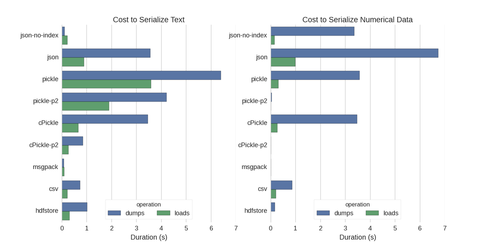

How to reversibly store and load a Pandas dataframe to/from disk
Right now I'm importing a fairly large CSV as a dataframe every time I run
the script. Is there a good solution for keeping that dataframe constantly
available in between runs so I don't have to spend all that time waiting for
the script to run?
Answer
The easiest way is to pickle it using to_pickle:
df.to_pickle(file_name) # where to save it, usually as a .pkl
Then you can load it back using:
df = pd.read_pickle(file_name)
Note: before 0.11.1save and load were the only way to do this (they are
now deprecated in favor of to_pickle and read_pickle respectively).
Another popular choice is to use HDF5 (pytables) which offers very fast access times for large datasets:
import pandas as pd store = pd.HDFStore('store.h5') store['df'] = df # save it store['df'] # load it
More advanced strategies are discussed in the cookbook.
Since 0.13 there's also msgpack which may be be better for interoperability, as a faster alternative to JSON, or if you have python object/text-heavy data (see this question).
Suggest
Although there are already some answers I found a nice comparison in which they tried several ways to serialize Pandas DataFrames: Efficiently Store Pandas DataFrames.
They compare:
- pickle: original ASCII data format
- cPickle, a C library
- pickle-p2: uses the newer binary format
- json: standardlib json library
- json-no-index: like json, but without index
- msgpack: binary JSON alternative
- CSV
- hdfstore: HDF5 storage format
In their experiment, they serialize a DataFrame of 1,000,000 rows with the two columns tested separately: one with text data, the other with numbers. Their disclaimer says:
You should not trust that what follows generalizes to your data. You should look at your own data and run benchmarks yourself
The source code for the test which they refer to is available online. Since this code did not work directly I made some minor changes, which you can get here: serialize.py I got the following results:

They also mention that with the conversion of text data to categorical data the serialization is much faster. In their test about 10 times as fast (also see the test code).
Edit : The higher times for pickle than CSV can be explained by the data
format used. By default pickle uses a printable ASCII representation, which
generates larger data sets. As can be seen from the graph however, pickle
using the newer binary data format (version 2, pickle-p2) has much lower
load times.
Some other references:
- In the question Fastest Python library to read a CSV file there is a very detailed answer which compares different libraries to read csv files with a benchmark. The result is that for reading csv files
numpy.fromfileis the fastest. - Another serialization test shows msgpack, ujson, and cPickle to be the quickest in serializing.